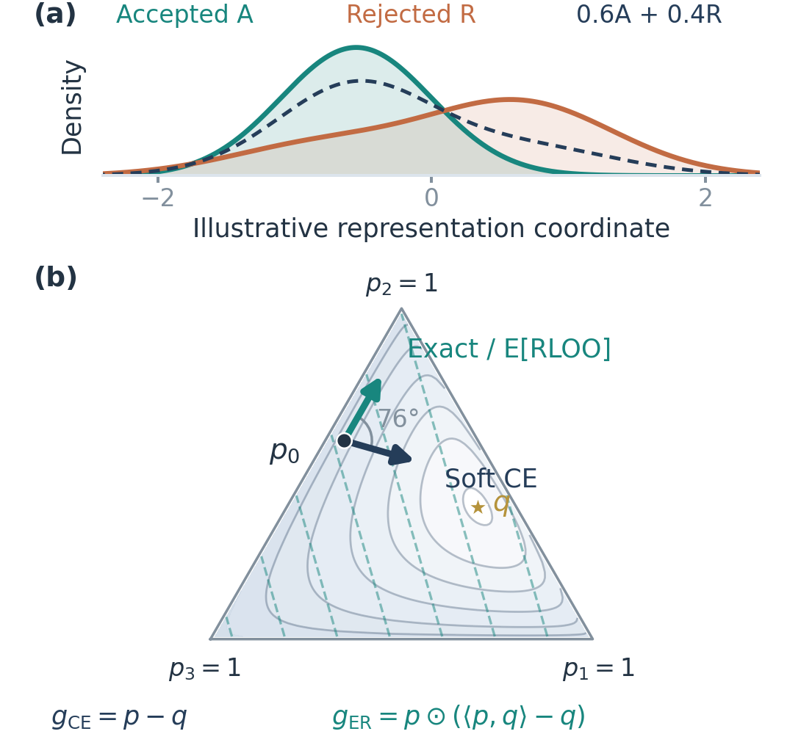
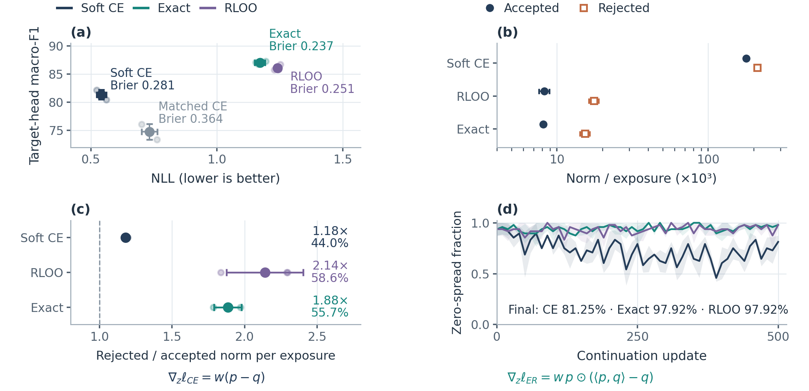
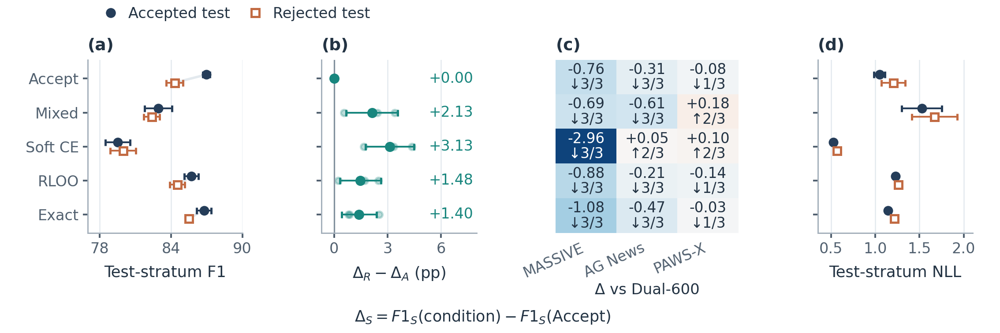
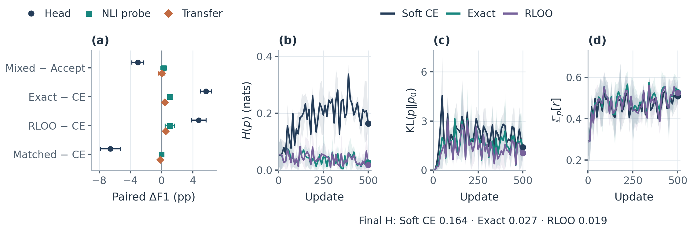

Objective choice
+5.69± 0.69
Head-F1 points: Exact minus soft CE, with the same fixed feedback and update budget.
Optimization study · Fixed verifier feedback
Identical verifier information can produce different learning dynamics. We separate support allocation, objective geometry, and representation change through controlled continuation of a filtered NLI classifier.
Data support Reward objectives Representation transfer

Objective choice
+5.69± 0.69
Head-F1 points: Exact minus soft CE, with the same fixed feedback and update budget.
Support allocation
−3.06± 0.78
Head-F1 points after replacing 40% of accepted inputs at fixed unique-example and exposure budgets.
Decision versus representation
+24.86 / +1.29
Head / target-probe F1 gains for Exact over Dual-600. The readout determines the observed effect.
Shared information, distinct gradients
A frozen instruction model averages six class-aligned views. Its distribution q and agreement weight w define the reward. RLOO estimates the exact-reward gradient with eight sampled actions; CE instead fits the verifier distribution.
Both retain reference-policy KL and dropout-JS regularization.
Paired seeds · Fixed checkpoints · Matched probe supports
CE achieves lower NLL: 0.542 versus Exact’s 1.171. Exact has better Brier score. Rejected inputs account for 55.66% of Exact’s action-logit norm sums, despite 40% of exposures.

The mixed pool retains 2,880 accepted and introduces 1,920 rejected inputs, matching verifier-class totals. Mean cross-task probe change is +0.01 ± 0.39 despite the head-F1 cost.

Probes use frozen features and support-fitted logistic regression. Against CE, Exact gains 1.03 target-probe and 0.41 cross-task points; task-specific rankings differ.

Controlled continuation
Each seed-matched Dual-600 parent receives 500 additional updates and 8,000 exposures. Target gold labels never enter reward construction or encoder adaptation. Reported deviations are sample SDs over three student seeds.